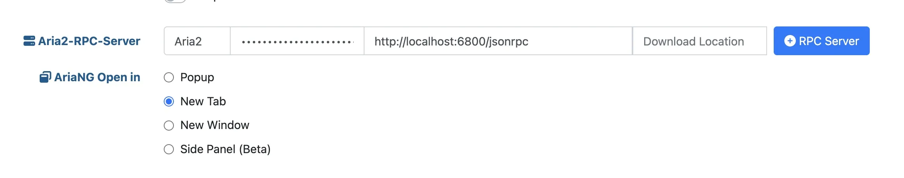

安装 aria2
$ brew install aria2
创建必要文件
$ mkdir ~/.aria2
$ touch ~/.aria2/aria2.conf ~/.aria2/aria2.session ~/.aria2/dht.dat ~/.aria2/dht6.dat
编辑 ~/.aria2/aria2.conf：
# 下载目录。可使用绝对路径或相对路径, 默认: 当前启动位置
dir=${HOME}/Downloads
# 磁盘缓存, 0 为禁用缓存，默认:16M
# 磁盘缓存的作用是把下载的数据块临时存储在内存中，然后集中写入硬盘，以减少磁盘 I/O ，提升读写性能，延长硬盘寿命。
# 建议在有足够的内存空闲情况下适当增加，但不要超过剩余可用内存空间大小。
# 此项值仅决定上限，实际对内存的占用取决于网速 (带宽) 和设备性能等其它因素。
disk-cache=64M
# 文件预分配方式, 可选：none, prealloc, trunc, falloc, 默认:prealloc
# 预分配对于机械硬盘可有效降低磁盘碎片、提升磁盘读写性能、延长磁盘寿命。
# 机械硬盘使用 ext4（具有扩展支持），btrfs，xfs 或 NTFS（仅 MinGW 编译版本）等文件系统建议设置为 falloc
# 若无法下载，提示 fallocate failed.cause：Operation not supported 则说明不支持，请设置为 none
# prealloc 分配速度慢, trunc 无实际作用，不推荐使用。
# 固态硬盘不需要预分配，只建议设置为 none ，否则可能会导致双倍文件大小的数据写入，从而影响寿命。
file-allocation=none
# 断点续传
continue=true
# 获取服务器文件时间，默认:false
remote-time=true
## 进度保存设置 ##
# 从会话文件中读取下载任务
input-file=${HOME}/.aria2/aria2.session
# 会话文件保存路径
# Aria2 退出时或指定的时间间隔会保存 ` 错误 / 未完成 ` 的下载任务到会话文件
save-session=${HOME}/.aria2/aria2.session
# 任务状态改变后保存会话的间隔时间（秒）, 0 为仅在进程正常退出时保存, 默认:0
# 为了及时保存任务状态、防止任务丢失，此项值只建议设置为 1
save-session-interval=1
## 下载连接设置 ##
# 最大同时下载任务数, 运行时可修改, 默认:5
max-concurrent-downloads=5
# 单服务器最大连接线程数, 任务添加时可指定, 默认:1
# 最大值为 16, 且受限于单任务最大连接线程数 (split) 所设定的值。
max-connection-per-server=16
# 单任务最大连接线程数, 任务添加时可指定, 默认:5
split=64
# 文件最小分段大小, 添加时可指定, 取值范围 1M-1024M (增强版最小值为 1K), 默认:20M
# 比如此项值为 10M, 当文件为 20MB 会分成两段并使用两个来源下载, 文件为 15MB 则只使用一个来源下载。
# 理论上值越小使用下载分段就越多，所能获得的实际线程数就越大，下载速度就越快，但受限于所下载文件服务器的策略。
min-split-size=4M
# GZip 支持，默认:false
http-accept-gzip=true
# 使用 UTF-8 处理 Content-Disposition ，默认:false
content-disposition-default-utf8=true
## BT/PT 下载设置 ##
# BT 监听端口(TCP), 默认:6881-6999
# 直通外网的设备，比如 VPS ，务必配置防火墙和安全组策略允许此端口入站
# 内网环境的设备，比如 NAS ，除了防火墙设置，还需在路由器设置外网端口转发到此端口
listen-port=6888
# DHT 网络与 UDP tracker 监听端口(UDP), 默认:6881-6999
# 因协议不同，可以与 BT 监听端口使用相同的端口，方便配置防火墙和端口转发策略。
dht-listen-port=6888
# 启用 IPv4 DHT 功能, PT 下载 (私有种子) 会自动禁用, 默认:true
enable-dht=true
# 启用 IPv6 DHT 功能, PT 下载 (私有种子) 会自动禁用，默认:false
# 在没有 IPv6 支持的环境开启可能会导致 DHT 功能异常
enable-dht6=true
# IPv4 DHT 文件路径，默认：$HOME/.aria2/dht.dat
dht-file-path=${HOME}/.aria2/dht.dat
# IPv6 DHT 文件路径，默认：$HOME/.aria2/dht6.dat
dht-file-path6=${HOME}/.aria2/dht6.dat
# IPv4 DHT 网络引导节点
dht-entry-point=dht.transmissionbt.com:6881
# IPv6 DHT 网络引导节点
dht-entry-point6=dht.transmissionbt.com:6881
# 本地节点发现, PT 下载 (私有种子) 会自动禁用 默认:false
bt-enable-lpd=true
# 启用节点交换, PT 下载 (私有种子) 会自动禁用, 默认:true
enable-peer-exchange=true
# BT 下载最大连接数（单任务），运行时可修改。0 为不限制，默认:55
# 理想情况下连接数越多下载越快，但在实际情况是只有少部分连接到的做种者上传速度快，其余的上传慢或者不上传。
# 如果不限制，当下载非常热门的种子或任务数非常多时可能会因连接数过多导致进程崩溃或网络阻塞。
# 进程崩溃：如果设备 CPU 性能一般，连接数过多导致 CPU 占用过高，因资源不足 Aria2 进程会强制被终结。
# 网络阻塞：在内网环境下，即使下载没有占满带宽也会导致其它设备无法正常上网。因远古低性能路由器的转发性能瓶颈导致。
bt-max-peers=128
# BT 下载期望速度值（单任务），运行时可修改。单位 K 或 M 。默认:50K
# BT 下载速度低于此选项值时会临时提高连接数来获得更快的下载速度，不过前提是有更多的做种者可供连接。
# 实测临时提高连接数没有上限，但不会像不做限制一样无限增加，会根据算法进行合理的动态调节。
bt-request-peer-speed-limit=10M
# 全局最大上传速度限制, 运行时可修改, 默认:0 (无限制)
# 设置过低可能影响 BT 下载速度
max-overall-upload-limit=2M
# 单任务上传速度限制, 默认:0 (无限制)
max-upload-limit=0
# 最小分享率。当种子的分享率达到此选项设置的值时停止做种, 0 为一直做种, 默认:1.0
# 强烈建议您将此选项设置为大于等于 1.0
seed-ratio=1.0
# 最小做种时间（分钟）。设置为 0 时将在 BT 任务下载完成后停止做种。
seed-time=0
# BT 下载优先下载文件开头或结尾
bt-prioritize-piece=head=32M,tail=32M
# 保存通过 WebUI(RPC) 上传的种子文件(.torrent)，默认:true
# 所有涉及种子文件保存的选项都建议开启，不保存种子文件有任务丢失的风险。
# 通过 RPC 自定义临时下载目录可能不会保存种子文件。
rpc-save-upload-metadata=true
# 下载种子文件 (.torrent) 自动开始下载, 默认:true，可选：false|mem
# true：保存种子文件
# false：仅下载种子文件
# mem：将种子保存在内存中
follow-torrent=true
# 保存磁力链接元数据为种子文件(.torrent), 默认:false
bt-save-metadata=true
# 加载已保存的元数据文件(.torrent)，默认:false
bt-load-saved-metadata=true
# 删除 BT 下载任务中未选择文件，默认:false
bt-remove-unselected-file=true
# BT 强制加密, 默认: false
# 启用后将拒绝旧的 BT 握手协议并仅使用混淆握手及加密。可以解决部分运营商对 BT 下载的封锁，且有一定的防版权投诉与迅雷吸血效果。
# 此选项相当于后面两个选项 (bt-require-crypto=true, bt-min-crypto-level=arc4) 的快捷开启方式，但不会修改这两个选项的值。
bt-force-encryption=true
# 分离仅做种任务，默认：false
# 从正在下载的任务中排除已经下载完成且正在做种的任务，并开始等待列表中的下一个任务。
bt-detach-seed-only=true
## 客户端伪装 ##
# 自定义 User Agent
user-agent=Mozilla/5.0 (Windows NT 10.0; Win64; x64) AppleWebKit/537.36 (KHTML, like Gecko) Chrome/93.0.4577.63 Safari/537.36 Edg/93.0.961.47
# BT 客户端伪装
# PT 下载需要保持 user-agent 和 peer-agent 两个参数一致
# 部分 PT 站对 Aria2 有特殊封禁机制，客户端伪装不一定有效，且有封禁账号的风险。
#user-agent=Deluge 1.3.15
peer-agent=Deluge 1.3.15
peer-id-prefix=-DE13F0-
## RPC 设置 ##
# 启用 JSON-RPC/XML-RPC 服务器, 默认:false
enable-rpc=true
# 接受所有远程请求, 默认:false
rpc-allow-origin-all=true
# 允许外部访问, 默认:false
rpc-listen-all=true
# RPC 监听端口, 默认:6800
rpc-listen-port=6800
# RPC 密钥
rpc-secret=<password>
# RPC 最大请求大小
rpc-max-request-size=10M
## 日志设置 ##
# 控制台日志级别，可选 debug, info, notice, warn, error ，默认：notice
console-log-level=info
# 安静模式，禁止在控制台输出日志，默认：false
quiet=false
# 下载进度摘要输出间隔时间（秒），0 为禁止输出。默认：60
summary-interval=0
## BitTorrent trackers ##
bt-tracker=
修改其中的，记住改密码，稍后要用到。
编辑启动项
新建并编辑~/Library/LaunchAgents/homebrew.mxcl.aria2.plist，内容如下：
<?xml version="1.0" encoding="UTF-8"?>
<!DOCTYPE plist PUBLIC "-//Apple//DTD PLIST 1.0//EN" "http://www.apple.com/DTDs/PropertyList-1.0.dtd">
<plist version="1.0">
<dict>
<key>Label</key>
<string>homebrew.mxcl.aria2</string>
<key>ProgramArguments</key>
<array>
<string>/opt/homebrew/opt/aria2/bin/aria2c</string>
</array>
<key>RunAtLoad</key>
<true />
<key>KeepAlive</key>
<true />
<key>StandardErrorPath</key>
<string>/tmp/aria2.err.log</string>
<key>StandardOutPath</key>
<string>/tmp/aria2.out.log</string>
</dict>
</plist>
管理 aria2
启动 aria2：
$ launchctl load -w ~/Library/LaunchAgents/homebrew.mxcl.aria2.plist
停止 aria2：
$ launchctl unload -w ~/Library/LaunchAgents/homebrew.mxcl.aria2.plist
查看日志：
$ cat /tmp/aria2.err.log
$ cat /tmp/aria2.out.log
安装前端界面
Chromium系浏览器安装 Aria2 Explorer，在 Aria2 Explorer 插件设置Extension Option Settings中Aria2-RPC-Server填入之前的密码，并保存。

参考资料